SpaceZero is a Real Time Strategy 2D space combat game
for a single or two players over a network.
Your objective is to conquer all space.
At the starting point the player owns a spaceship which has
landed on a planet.
Your first task is to acquire new spaceships and
find new planets in the Galaxy.
By pressing key "o", a command menu will be displayed
at the bottom of the main window. You can buy towers
to extract resources and get more gold, explorers and
fighters to explore and conquer the Galaxy.
After selecting an order press "ENTER" to
execute it.
Press "ESC" to cancel it.
Pressing any of the navigation spaceship keys (key
arrows and space bar by default) to control the
spaceship manually. Press the "down key arrow" to
return to automatic mode.
In manual mode you can control every spaceship
independently. To turn the spaceship right or left use
the arrow keys. In order to accelerate, use the up
key arrow. SPACE to fire. "1", "2", "3", to change
weapon.
By pressing key "M", a map of the known Universe
will be displayed.
See Keyboard control for more options.
Spaceships: There are five types of
spaceships: Explorer, Fighter, Defence Tower, Queen
spaceship and defence satellite.
| 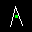 |
Explorer | Useful to explore
the space. It has a low gas cost and poor
weapons. It has a large radar. |
|
Fighter |
Better weapons and faster than the explorer. |
| 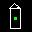 |
Defence Tower |
The Defence Tower can only stay on planets. It has two
objectives: the defence of the planet and the
extraction of minerals. |
| 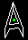 |
Queen spaceship |
In queen mode game, if you lose it, you lose
the game. |
| 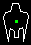 |
Freighter |
Opening up commerce between two planets. The
gold earned is proportional to the distance
between the two planets. |
|
Defence satellite |
Unmanned ship. Useful for space exploration
and planet defence. |
Other objects:
|
Astronaut |
All FIGHTERS of level 1 or superior come
equipped with a survival pod. When a spaceship
is destroyed the pilot is ejected. This pilot
will be able to survive in space during a
certain time (around 5 min.). He can be rescued
by another spaceship and returned to the ground
where he will be able to acquire a new
spaceship. The level of the new spaceship will
be equal to the old one. Its experience is set
to zero. |
|
Planets |
You must conquer them. |
|
Asteroids |
Everywhere. Destroying them, you get
gold. |
Ship Properties:
| | Mass | Max. velocity
(pixels/s) | Weapons | Cargo | Radar range
(in sectors) |
|
Explorer |
50 | 30 | shots | 30 | 2 |
|
Fighter |
100 | 30 | shoots, missile, laser | 30 | 1 |
|
Defence Tower |
100 | 0 | shoots | 0 | 1 |
|
Queen |
400 | 30 | shoots | 100 | 3 |
|
Freighter |
400 | 30 | none | 200 | 2 |
|
Satellite |
10 | 30 | shoots | 0 | 3 |
|
Astronaut |
10 | 20 | none | 0 | 1 |
Orders menu: It is possible to give orders to
spaceships: pressing the "o" key, an orders menu is
displayed at the bottom of the main window. When you
enter the order mode you only can give an order. You
get out of the order mode in one of the following
ways:
- Executing the order. Pressing "ENTER".
- Cancelling the order. Pressing "ESC".
- Changing spaceship. Pressing: "TAB",
"PageUp", "PageDown" or
"Home".
Several orders are available:
| GOTO |
You can send your spaceships to different targets in many ways:
- Giving the target id. The target id can be
a planet or another spaceship. Several spaceships can
fly together if all of them have the same
target id. Example: GOTO 23. Will go the
object labelled with the number 23. It can be
a planet or another spaceship.
- Giving the sector coordinates separated
by blank or coma. Example: GOTO 23,12
- Go to the nearest planet with n. Example:
GOTO n. Will go to the nearest allied or known
free planet.
- Instead of the spaceship id you can write
F1, F2, etc. for the selected marked spaceships
(see
selecting a spaceship). Example: GOTO F3.
- In map view, the right mouse button will
send the selected spaceships to the mouse
position. If the pointer is closer than 0.5
sectors to a planet or to one's spaceship then
they will be sent to that planet or spaceship.
|
| EXPLORE |
Your spaceship will take off and will explore
space. Be aware if your spaceship runs out of fuel or if
it is very far from home. |
| SELECT |
You can select a spaceship or a planet typing its
id. |
| STOP |
Your spaceship will stop. Inside a planet, it will
land first. Once stopped, it will only shoot, but will
not accelerate. |
RETREAT [n] |
|
| TAKE OFF |
To take off. |
| ORBIT |
The Spaceship will take off and orbit around
the planet. If it starts at outer space it will
go first close to nearest planet.
It will never thrust while orbiting. Under
attack it only turns and shot. With low
ammunition, fuel or great damages, it will return to
the nearest allied planet. |
| BUY |
You can buy any available spaceship, if you have
enough gold. The spaceship must be landed.
If you are not in a planet of your own, you can't
buy Towers.
The Pilots only can buy Fighters. |
| UPGRADE |
You can upgrade your spaceship until one level
lower than the greatest level reached. The spaceship
must be landed. |
| SELL |
To sell a spaceship. You'll get the half of its
original value. The spaceship must be landed.
If it is not landed will be destroyed.
|
| REPEAT |
Repeat the last order given. |
Manual and automatic mode:
You can change between both modes, for all your spaceships,
pressing any of the navigation spaceship keys (key arrows
and space bar by default) for manual mode and give an
order or press the "down arrow" key to go back to
automatic mode.
Only one spaceship can be changed between these modes at a
time. Inside a planet this special spaceship is drawn with
white color. In the free space this spaceship is shown with
the radar centered on it.
In manual mode you can control every spaceship independently
with the keyboard. To turn the spaceship use the left and right
arrow keys. To accelerate, the up key arrow. SPACE to
fire. 1,2,3 to change armour.
In automatic mode, the spaceship follows your orders,
except in the following cases:
- If an enemy spaceship is near then attack.
- If it is close to asteroids, it will go towards them.
- If it has little fuel or no ammunition it will go to the
nearest allied planet.
- When landed, it doesn't take off until it obtains a
minimum amount of fuel and ammunition.
When the exceptions finish, it will continue with the given
order.
Special orders:
- STOP:
If the spaceship is in outer space: stop, doesn't accelerate but can fire.
Inside a planet: it first lands and stays on the ground, it doesn't take
off but can fire. It never takes off.
The order STOP is applied except in the following cases:
- if the spaceship has low ammunition, low fuel or is very
damaged it goes to the nearest allied planet.
- RETREAT:
The spaceship will go directly to their destiny without
attack enemies or asteroids.
Selecting a spaceship:
There are several ways of selecting a spaceship:
- Pressing the "Tab" key you can change
between all your spaceships. "Ctrl-Tab" inverts
the order.
- Pressing "PageDown" selects a spaceship in
the next planet. "PageUp" in the
previous one.
- Pressing "Home" selects the first
spaceship in outer space.
- Using the order command SELECT and introducing
the spaceship ID.
- With mouse. Left button selects the nearest spaceship to
mouse pointer. This selected spaceship can be inside a
planet.
- There are four rapid access keys to select spaceships:
F1, F2, F3 and F4. If you press Ctrl-F1 the
actual selected spaceship is assigned to the key F1,
etc...
Selecting multiple spaceships:
You can select various spaceships with the mouse. The next
order will affect all of them. Simply, click with the left
mouse button and, without releasing it, drag and select
the region you want. All spaceships in this region will be
selected.
You can select multiple individual spaceships keeping the
"ctrl" key pressed.
If you select a planet in the map view, all spaceships
inside the planet will be selected.
The color of the selected spaceships will be grey.
Selecting a target:
|
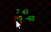
|
If the mouse pointer is close to a planet or one's own
spaceship a red square signs the target objective. The right
mouse button will send all selected spaceships to this
target. This target can be a planet or any of your
spaceships.
Over the mouse pointer is displayed: the space
coordinates, the distance, in sectors from the
selected spaceship to the mouse pointer and the id of the
target.
|
Weapons:
The spaceships have three types of weapons.
| Shots | All the spaceships. |
| Missile | Only fighters. |
| Laser | Only fighters. |
Depending on the level of the spaceship some weapons are
available or not. At level 0 only the shots are
available. The fighter has two more weapons: missile at
level 1 and laser at level 2. All the spaceships increase their
weapons strength and their shields when they get a new
level.
In manual mode you can change amongst the weapons pressing
1, 2 or 3 keys (If the weapon is available or it has
ammunition).
Defence satellites:
|
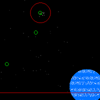
|
In order to get defence satellites orbiting around
your planets you must proceed as following:
- Buy some satellites (spaceships must be landed).
- Give them the ORBIT order.
- Once the spaceships are orbiting eject the satellites pressing <Alt-s>.
You can destroy the satellites selecting and giving them the order DESTROY.
All the satellites that are far away from a planet will be lost.
|
Window and spaceship centered view modes.
Pressing "Ctrl-n" it is possible to change between two
view modes: centered at the spaceship or centered at the
window.
Game modes:
There are three game modes: Cooperative, Deathmatch and Queen mode.
- Cooperative.
You can select from the menu two
options:
- Cooperative mode. In this case all human
players fight in the same team.
- Computer cooperative mode. All computer
players fight in the same team.
- Deathmatch.
It is the default mode. All
the players fight against all.
- Queen mode.
A special spaceship plays the same role as
the King in chess. If you lose it, all
your spaceships are destroyed. GAME OVER.
It is possible to select these options from the command
line: -cooperative, -compcooperative, -queen.
Navigate information:
| 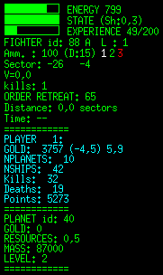 |
In normal navigation mode, in the left of the
main window you can see the following information:
- Three status bars: energy,
state and experience of the current selected
spaceship. The number next to STATE is the
shield. A shield of 0.3 means that the spaceship
receives 70% of the damage. The maximum
value is 0.9.
- Information about the current selected spaceship as
the type of spaceship. Its ID. Its mode: Automatic
(A) or Manual (M) and its level.
Ammunition of
the current selected weapon (damage) and weapon
selected.
In which sector it is, velocity,
number of enemies killed, actual order, distance
and time remaining to reach the target.
- Global information about the player: gold,
number of planets, number of spaceships, number
of enemies defeated, number of spaceships lost and
points.
- Information about the planet in which the spaceship
is. Planet ID, gold remaining, resource, mass
and the level of the highest level spaceship. The
resource indicates the number of towers that can
be built in the planet. More towers can still
defend the planet but don't extract more gold.
|
Radar:
|
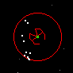
|
In the free space the radar info is shown as a red
circle centered at the spaceship. The different objects
are represented as follows: big dots for planets, with
the color of the player that owns such planet. White
dots for the owned spaceships, blue dots the
spaceships of the same team and red dots for the enemy
spaceships.
The survival pods as flashing crosses.
|
Map:
Pressing the "m" key you enter in the map
view. All your spaceships and all known planets are
shown.
It is possible to zoom in and out with
"z" and "Z".
The cursor keys allow you to move along the map.
<SPACE> centers the map on the current spaceship.
Over the mouse pointer the space coordinates and the
distance in sectors from the selected spaceship to the mouse
pointer are displayed.
|
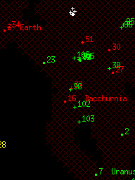
|
The white color is reserved for empty planets and
asteroids. The different objects have the color of
their player. The planets are represented by big
dots, the spaceships by crosses, the asteroids by
white crosses, the astronauts in free space by
flashing crosses. The spaceships and planets
also have their own id number.
The explored universe is marked with dark red
crosses. The universe has a limit; beyond that
there are no marks and no objects.
|
|
|
If the mouse pointer is close to a planet or one's own
spaceship, a red square signs the target objective. The right
mouse button will send all selected spaceships to this
target. This target can be a planet or one's own
spaceship.
|
Game messages:
|
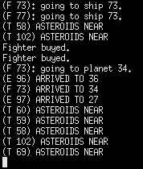
|
All information about the game as: spaceships in
danger, asteroids found, planets discovered,
etc. appears in the bottom left corner of the main
window.
Pressing the "f7" key a log message window will pop
up. It shows the last 200 game messages.
If you run SpaceZero from a terminal the same
information is displayed on it. All the given
orders accepted are also shown there.
|
Spaceships and planets info:
Pressing the "f5" key short information of all your
spaceships and planets is displayed.
| 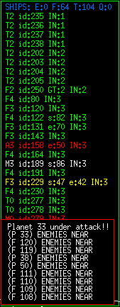 |
In the left of the main window you can
see the following information about your spaceships:
The first line shows the total number
of spaceships and the number of each type.
There is a line for every spaceship with the following information:
- The type of the spaceship and its level: F
(fighter), T (tower), E (explorer), Q (queen) , A
(astronaut) or M (if it is in manual mode).
- Its ID.
- The actual order. EXP means exploring. GT:14
that is going to obj 14.
- In which planet is the spaceship. IN:0 means in outer space.
- If the spaceship state or energy
are not at 100% it is showed these values.
- In white color its shown the actual selected
spaceships. Red and yellow colors are for
spaceships in danger (cause of low gas or
damaged). The pilots and spaceships in manual
mode are shown in red. In blue the allied
ones.
|
| 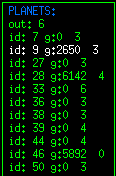 |
In the right side of the screen is shown a planet
list with the next information: planet id, gold
remaining and the number of spaceships in it.
The number of spaceships in outer space is showed in the second line.
|
Pressing the "f6" key a sort game
statistics are displayed with the next information:
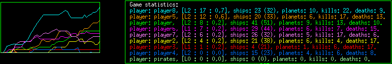
In the left window: the historic values of the sum of the
level of all spaceships.
In the right one: Player name, [player level : sum
of the level of all spaceships : average level], number of
spaceships, (total number of spaceships created), planets, enemy
destroyed and number of lost spaceships.
Pressing the "ESC" key all the info windows are closed.
Repairing spaceships:
The spaceships are repaired, refueled and rearmed while are on
ground.
In space, can be done little reparations. They obtain also some energy.
Experience and Levels:
Spaceships experience increase during the game. When a spaceship
reaches a maximum is upgraded to the next
level. This way it can get new arms, better defence
and more power. If a spaceship is upgraded, its state and
energy is restored to the maximum value.
The spaceships can get experience in any of the following ways:
- In combat, when a spaceship is reached by a shot,
destroying an enemy spaceship and conquering an enemy or
empty planet.
When a spaceship conquer a planet there is a probability to
received info from enemy (the coordinates of some
planet). This probability increase with spaceship's level.
- Exploring: Discovering new planets.
- Training: all spaceships with a level equal or
superior to 3 can train other spaceships. For training,
both spaceships must be in same planet and the pupil must
be landed. The master also must be two levels
superior. The spaceship must be totally repaired.
- Trading: Every time a Freighter complete a
trip increased it experience.
- Upgrade: you can upgrade a spaceship (it cost
gold). You can only upgrade until one level below the
player level.
Player level: The player level is the maximum
level reached for one of your spaceships. The level of the
player will be increased only when the spaceship lands.
Gold:
There are several ways to obtain gold:
-Every tower in each planet gets gold until the planet
resources are finished. In this case they can still
obtain a little amount of gold. Increasing the number
of towers in every planet increased the amount of gold
obtained. Depending on the planet mass, there is a
limit in the number of towers in the same planet that
can obtain gold. For the big ones, this limit can be
four or five towers. For the little ones, three.
-For each planet, every player gets a fix amount of
gold.
-Destroying asteroids is another way to obtain gold.
-Trading: when a Freighter spaceship reach a planet, the
planet resources are increased.
-All the spaceships destroyed inside a planet increase the
planet resources.
-And the last way: selling spaceships .
And there are also several ways to lost it:
-All the spaceships, except the towers, have a cost. This
constant cost is increased when a spaceship is upgraded.
-All the ammunition cost gold.
-Repair and refuel a spaceship cost gold.
-Buying, upgrading spaceships.
Exploring the Universe:
The explore skills depends on the level of the spaceship:
- level 0: a random walk.
- level 1: try to find an unknown sector near their
position. if there no one: random walk
- level 2 and greater: looks for an unknown sector
further than the previous level. If there no one: random
walk
The explorers increase in one their skill value: an
explorer of level 0 has a level 1 on explorer skill. A
fighter of level 0 has a level 0 on explorer skill.
Size of the Universe:
Its possible to choose the size of the Universe, the
number of galaxies and the total number of
planets. Use the command line options: -l, -g and
-n. The units of the universe size are pixels.
The distance is indicated in sectors (1 sector is 1410
pixels)
Net gaming:
For two players net game: one must be configured as
the server and the other one as the client. Use the
next command line options:
$ spacezero -s -ip ipnumber
for the server, and
$ spacezero -c -ip ipnumber
for the client.
where ipnumber is the IP number of the server.
SpaceZero use the port 50100 by default. You can use
another port adding -port portnumber in the command
line. SpaceZero also use the next port, by default
50101.
Saving game options: By default the options are
saved when the game starts. A new game starts with the
previous game options.
Loading and saving games:
<Ctrl>-s and <Ctrl>-l will save and load a game. Only two
games can be saved: one for single games and another one for a net
games.
In a net game only the server can save and load games.
Pausing a game:
<Ctrl>-p will pause the game.
Quitting a game:
<Ctrl>-q will quit the game.
Game Over:
If you lost all your spaceships the game is over.
In queen mode game, if you lost the Queen Spaceship,
you lost the game.
When game is over, pressing the "f9" and
"f10" keys you can observe the other players
(in single games and in the server side).
Tips:
-Try to conquer all the inexplore planets as fast as
you can.
-Don't buy more than two or three towers by planet
unless you need to defend the planet.
-Watch out your explorers, don't let them go too far.
-You can form groups of spaceships ordering to some of
them GOTO another spaceship. All of them will go where this
last one go.
-Save some gold. It would be useful if you are under attack.
-Use the spaceships of level three or superior to upgrade
the rest, especially the towers.
|